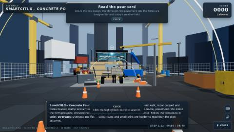

Construction & Structural Trades
Concrete Pour
The pour the formwork exists for, with the pump remote and the crane over the deck as the interruptions that make it real.
- ACI — ACI concrete field testing technician certification and ACI 301 specifications for structural concrete
- union — LIUNA Training and Education Fund — construction craft laborer, hazardous waste and environmental remediation curricula
- OSHA — 29 CFR 1926 — Safety and health regulations for construction
base run daylight dusk fog storm overcast hazard mode interruption: remote dropout interruption: crane swing assessment variant
Launch Concrete Pour